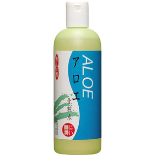

返回列表
产品名称：美人の館 アロエ化粧水

黒ばら本舗 美人の館 アロエ化粧水 ４００ｍｌ
メーカー 黒ばら本舗
JANコード 4901508972003
商品の特徴
天然植物保湿剤の抽出液を配合した、低刺激・無香料・無着色の化粧水です。アロエは、カサついたお肌をやさしくいたわりながらうるおいを与えます。肌へのやさしさにこだわる方におすすめします。
成分・分量
水、グリセリン、エタノール、BG、アロエベラエキス-1、ソルビトール、尿素、グリチルリチン酸2K、ピリドキシンHCl、アラントイン、ポリソルベート20、クエン酸Na、オキシベンゾン-4、パラベン
用法及び用量
-